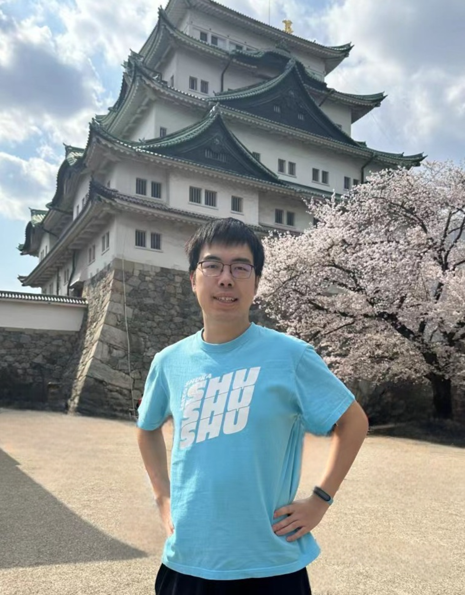
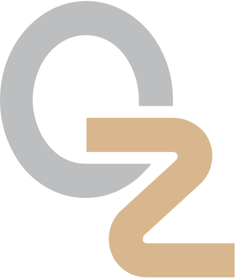

|
Zhenyu Wei | 卫振宇 I am an incoming CS Ph.D. student at University of North Carolina at Chapel Hill, advised by Prof. Mingyu Ding. I received my Bachelor's degree in Computer Science at at Shanghai Jiao Tong University. During my undergraduate years, I work closely with Prof. Lin Shao at National University of Singapore and Prof. Cewu Lu at Shanghai Jiao Tong University. Email / CV / Github / Google Scholar / WeChat
×

|
 |
News
|
ResearchMy research interests lie in 🤖dexterous manipulation. My long-term goal is to make robots an essential part of daily life, reshaping how we live. I'm open to collaborations on robotics related projects, feel free to contact me!🤟 Papers sorted by recency. Representative papers are highlighted. |

|
TelePreview: A User-Friendly Teleoperation System with Virtual Arm Assistance for Enhanced Effectiveness
, , , , , , , Website / arXiv
Best Paper Award, ICRA 2025
@ Human-Centric Multilateral Teleoperation
ICRA 2025 Human-Centric Multilateral Teleoperation Workshop (Spotlight)
×

TL;DR:
Implement a low-cost teleoperation system utilizing data gloves and IMU sensors, paired with an assistant
module that improves data collection process by visualizing future robot operations through visual previews.
|

|
MetaFold: Language-Guided Multi-Category Garment Folding Framework via Trajectory Generation and Foundation Model
*, *, , , , , , , , , , Website / arXiv
IROS 2025
International Conference on Intelligent Robots and Systems
TL;DR:
MetaFold employs language-guided point cloud trajectories for task planning and a foundation model for
action prediction, enabling better generalization across garments and instructions.
|

|
$\mathcal{D(R,O)}$ Grasp: A Unified Representation of Robot and Object Interaction for Cross-Embodiment Dexterous Grasping
*, *, , , , , , Website / arXiv / Code / Media (机器之心)
ICRA 2025
International Conference on Robotics and Automation
ICRA 2025 Best Paper Award on Robot Manipulation and Locomotion Best Robotics Paper Award, CoRL 2024 @ MAPoDeL CoRL 2024 MAPoDeL Workshop (Oral) & LFDM Workshop (Spotlight)
×

×

TL;DR:
Introduce $\mathcal{D(R,O)}$, a novel interaction-centric representation for dexterous grasping tasks that
goes beyond traditional robot-centric and object-centric approaches, enabling robust generalization across
diverse robotic hands and objects.
|

|
Auto-Pairing Positives through Implicit Relation Circulation for Discriminative Self-Learning
, , , IEEE Xplore / Code
TPAMI 2025
IEEE Transactions on Pattern Analysis and Machine Intelligence
TL;DR:
Introduce Implicit Relation Circulation (IRC), a self-supervised learning framework leveraging random walks
across feature groups without explicit matching. By connecting it to a simpler task, cycle consistency enables
the automatic discovery of positive pairs.
|
Selected Honors
|
Experience |
|  |
Shanghai Qi Zhi Institute, China 2025.02 - presentResearch InternResearch Advisor: Prof. Huazhe Xu |

|
NUS LinS Lab, Singapore 2024.06 - 2025.02Research AssistantResearch Advisor: Prof. Lin Shao |

|
SJTU Machine Vision and Intelligence Group (MVIG), China 2022.10 - 2024.05Research InternResearch Advisor: Prof. Cewu Lu |
|
|
Shanghai Jiao Tong University, China 2021.09 - 2025.06B.Eng. in Computer Science (Zhiyuan Honor Degree)GPA: 4.0/4.3 (92.5/100) |
|
Thanks for your visiting😊! Feel free to contact me if you have any problems.
|